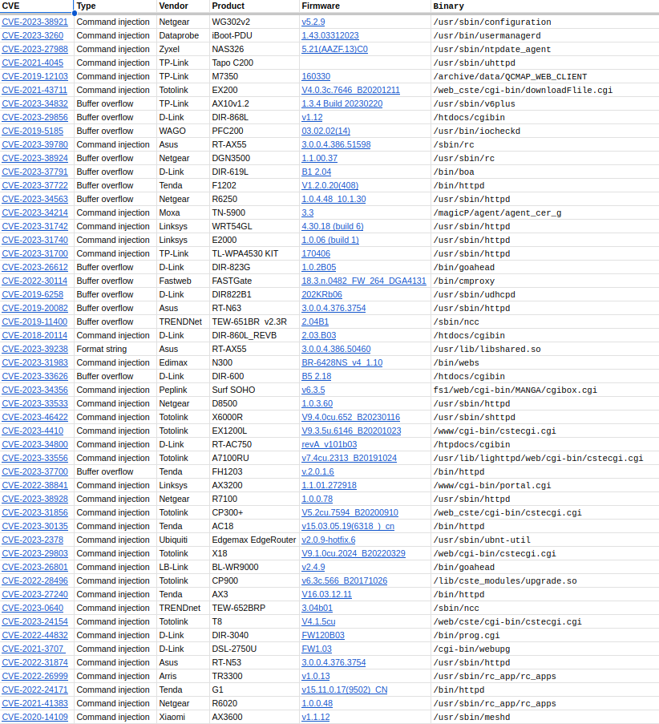

Binary pointer alias analysis — beating CodeQL’s taint analysis without even having source code
Prologue
I did not attend Hexacon in 2022, and I was definitely not in a hotel in Paris those days.
It must have been 2020 when I re-watched the original Blade Runner for the 100th time in my life during covid when I first conceived what would later become PRIS (short for PRoven Inference Security, or maybe a tribute to Daryl Hannah, who knows), a binary zero-day identification feature for IoT firmware, the first of its kind.
The focus was put on path-sensitivity and reducing some of the false positives that other tools, based on simple monotone frameworks and pattern matching suffered from, but this resulted in increased computational costs due to concolic analysis in the first version of the implementation. Incidentally, that's the version that we still ship today.
I soon realized that the final solution must incorporate more static techniques in order to be efficient, and I also realized that the real gain of using a full-fledged concolic/symbolic engine was its power in solving the pointer-aliasing problem on those traces that it has coverage on. Therefore, I dived deeper into understanding this problem, and to my amazement it turned out that people have been investigating more or less the very same problem that I was faced with for as long as there were computers. The earliest useful papers I found were from the 70's, and considerable theoretical and practical progress took place in the 80's and 90's. In the 2000s, focus shifted to large-scale software systems, and then finally in 2010 we arrive at some security applications.
I'll try my best to distill my knowledge about this topic into a somewhat lengthy, but more or less self-contained article, so more people can enjoy the beauty of this subject.
Introduction
A common root cause of critical software bugs are so called taint-style vulnerabilities. These are characterized by execution flows where an attacker controlled input variable or piece of data reaches certain security-sensitive program statements. A notable example would be OS command injections (CWE-78) like this:
xxxxxxxxxx31void func(char* attacker_controlled) {2 system(attacker_controlled); // Uh oh!3}Or buffer overflows resulting from some kind of unsafe memcopy where the length of the input string is not checked (CWE-120):
xxxxxxxxxx41void func(char* attacker_controlled){2 uint8_t localbuf[512];3 strcpy(localbuf, attacker_controlled); // Uh oh!4}These trivial examples are easy to spot, but discovering similar issues in production code is considerably more difficult. It is not a simple task to identify parts of the code where user-controlled data enters the system (so-called ‘sources’ in taint analysis nomenclature), and it is especially hard to find all feasible paths from these to the security sensitive ‘sinks’. The execution flow can span various functions, variables get assigned, reassigned and copied around, indirect calls can happen via function pointers or virtual dispatch, etc.
SAST (static application security testing) tools are good at identifying vulnerable code patterns, even if they can’t actually reason about the runtime semantics of the code due to known theoretical results, such as Rice’s theorem. Still, production grade static analyzers, such as CodeQL make a good attempt at providing the building blocks for security researchers and developers to help them identify these issues automatically. Results of SAST tools are known to be noisy, that is, having a lot of false positives, since these in general overestimate the feasible execution paths in programs, and they will raise alerts in many cases where the flagged vulnerability could never actually happen in practice (mitigating that would be introducing path-sensitivity, and it can be done for example with symbolic execution, however, that technique is much more expensive in computational resources and it can suffer from combinatorial explosion of the state space).
Sometimes, though, SAST tools also introduce false negatives, and that should be much more scary from a vulnerability management standpoint: you can’t address stuff you can’t even see.
A fairly simple example
Consider the following code.
xxxxxxxxxx231
6void vuln(char* input, char* output){7 strcpy(output, input); // Stack-based buffer overflow8}9
10int main(int argc, char** argv) {11 char taintedbuf[128];12 char localbuf[32];13
14 read(STDIN_FILENO, taintedbuf, 128); 15
16 char* p = taintedbuf;17
18 char* q = p;19
20 vuln(q, localbuf);21
22 return 0;23}We can try to craft some CodeQL to detect this vulnerability. Here, I’m using TaintTracking::Global with my own configuration to establish the sources and sinks.
x
1import cpp2import semmle.code.cpp.dataflow.new.TaintTracking3import semmle.code.cpp.dataflow.new.DataFlow4
5/**6 * Define a module that implements the taint tracking configuration.7 */8module ReadToStrcpyFlowConfig implements DataFlow::ConfigSig {9 /**10 * Define sources: the first argument of `read()`.11 */12 predicate isSource(DataFlow::Node source) {13 exists(FunctionCall call |14 call.getTarget().hasName("read") and15 source.asExpr() = call.getArgument(1)16 )17 }18
19 /**20 * Define sinks: the second argument of `strcpy()`.21 */22 predicate isSink(DataFlow::Node sink) {23 exists(FunctionCall call |24 call.getTarget().hasName("strcpy") and25 sink.asExpr() = call.getArgument(1)26 )27 }28
29 /**30 * Define barriers: where taint is sanitized or stopped.31 */32 predicate isBarrier(DataFlow::Node node) { none() }33}34
35module ReadToStrcpyFlow = TaintTracking::Global<ReadToStrcpyFlowConfig>; 36
37from38 ReadToStrcpyFlow::PathNode source, ReadToStrcpyFlow::PathNode sink39where40 ReadToStrcpyFlow::flowPath(source, sink)41select42 source, "Taint originates here.",43 sink, "Taint propagates to here."This does the trick indeed.CodeQL is able to correctly track the taint relationship, even through a function call (so-called interprocedural analysis):
!
Now let’s have an example that is only a slightly more complex, resembling a real-world context. Here, there are two structure definitions where some additional data is stored along the pointer. Moreover, the two structures are nested in each other, our target pointer is stored in struct data_inner’s, and those are wrapped in data_outer’s. Our vulnerable function now receives the outer structure, and copies the data via data->ptr_inner->data.
Easy, right? Call it bof.c:
xxxxxxxxxx401
6struct data_inner {7 int key;8 unsigned int hash;9 char* data;10};11
12struct data_outer {13 int key;14 unsigned int hash;15 struct data_inner* ptr_inner;16};17
18int vulnerable(struct data_outer* data);19
20int main(int argc, char** argv) {21 char taintedbuf[128];22 struct data_inner d1;23 struct data_outer d2;24
25 d1.key = 0xdead;26 d2.key = 0xbeef;27 d1.hash = 0xcafe;28 d2.hash = 0xbabe;29 d2.ptr_inner = &d1;30 d2.ptr_inner->data = (char *)&taintedbuf;31
32 read(STDIN_FILENO, taintedbuf, 128); 33 vulnerable(&d2);34 return 0;35}36
37int vulnerable(struct data_outer* data) {38 char localbuf[64];39 strcpy(localbuf, data->ptr_inner->data);40}
Well, let’s try to run the same CodeQL example to see what happens.
Oops. Nothing this time. Why is that?
Important
Well, as it turns out, the answer has to do with CodeQL choosing not to implement detailed pointer alias analysis as a design decision.
In many ways, static analyzers have to balance computational complexity, precision, scalability and also maintain some kind of a nice user experience with an intuitive API/rule syntax.
Still, aiming low on the pointer alias analysis problem means that CodeQL and most other SAST tools won’t find a lot of juicy and practical vulnerabilities, that are often super simple for human analysts to find, and for attackers to exploit (90% of high-impact IoT device Remote Code Execution CVEs are in fact taint-style vulnerabilities according to our own study over at BugProve, the rest is pretty much just hard-coded credentials).
Pointer alias analysis
So what is this problem and why is it difficult? Basically, you are trying to identify all pointer definitions p and q, where q may alias p. Two pointers alias each other when they point to the same object. Consider this example.
xxxxxxxxxx381
4void func(int num, int** p, int** q, int** r, int** s, int** t) {5 if (num<10) {6 *r = *q;7 *q = *p;8 }9 else {10 *r = *q;11 }12 *t = *p;13}14
15int main(int argc, char** argv) {16 int object1 = 0xdead;17 int object2 = 0xbeef;18 int object3 = 0xcafe;19 int *p, *q, *r, *s, *t;20
21 p = &object1;22 q = &object2;23 s = &object3;24
25 if (argc > 1) {26 func(atoi(argv[1]), &p, &q, &r, &s, &t);27 }28 else {29 printf("Taking one paramter %s <num>\n", argv[0]);30 exit(1);31 }32
33 printf("*p: %x\n", *p);34 printf("*q: %x\n", *q);35 printf("*r: %x\n", *r);36 printf("*s: %x\n", *s);37 printf("*t: %x\n", *t);38}There are 10 pairs of pointers we should investigate at line 33. At the end of the main function, the followings are true:
p and q may alias
p and r must alias (why?)
p and s do not alias
p and t must alias
q and r may alias
q and s do not alias
q and t may alias
r and s do not alias
r and t do not alias (why?)
s and t do not alias
Now, all of these relationships hold for the values of p,q,r,s,t at the basic block starting from line 33 above. Crucially, we are also interested in aliasing relationships between the values of p, q, s at line 21, 22, 23 and the values that they hold at the end of the main function.
Since the func() operations does not change p or s, and we also see that r always receives the value of the original q, whereas t always receives the original p, we can deduce that:
p at line 33 must alias &object1
q at line 34 may alias &object1 or &object2
r at line 35 must alias &object2
s at line 36 must alias &object3
t at line 37 must alias &object1
Sometimes authors differentiate between alias analysis and points-to analysis. Alias analysis computes a set S holding pairs of variables (p,q) where
p and q may (or must) point to the same location. On the other hand, points-to analysis computes a relation points-to(p,x), where
p may (or must) point to the location of the variable x.
It is not that hard to see that accurately establishing these relationships is not only NP-hard, but in general, it is uncomputable for arbitrary programs. For formal proofs of these, see Landi et al [1]. Practical algorithms therefore have to resort to approximations, and it is important to mention that may-analysis is generally easier than must-analysis, as one should expect.
Modern compilers like clang/LLVM and gcc run all sorts of fancy optimization and program analysis algorithms. However, for large codebases not only superpolynomial algorithms are a big no-no, but even more expense polynomial algorithms, say, cubic ones are going to have scalability issues. That is, for compilation, more accurate alias analysis solutions won't be acceptable. However, when it comes to security, the trade-off is slightly different: spending a few minutes or even hours of compute to prevent a critical CVE might actually be a bloody good idea under most reasonable threat models and organizational economic constraints. Hence, the full SAST, SCA and application security industry generating some $7B annually.
For our model example in bof.c, if we are able to establish with pointer alias analysis that data->ptr_inner->data on line 39 aliases d2.ptr_inner->data on line 30 and therefore aliases &taintedbuf, we can raise an alert about an issue given the sizes of the buffers used during strcpy. Cool, huh?
Alias analysis in compilers
Before investigating what we can come up with in terms of pointer alias techniques capable of discovering interesting taint-style vulnerabilities, let's see what compilers do when it comes to dealing with pointers. The two main algorithms are Andersen's algorithm and Steensgaard's algorithm, invented by fine Scandinavian gentlemen in the late 20th century.
Andersens's algorithm is pretty much what you would come up with naturally after obtaining a foundational body of knowledge in program analysis techniques such as dataflow analysis, constraint based analysis and Abstract Interpretation (not to be confused with the other AI, the bubbly one that 2024 will be remembered for).
So, Andersen's algorithm kind of goes like this. Let's define set constraints based on program statements using the following rules.
That is,
The set of locations pointed to by p contain the label x.
Those locations pointed to by p must contain those pointed to by q.
Those locations pointed to by *p must contain those pointed to by q.
Those locations pointed to by *q must contain those pointer to by *q.
We can also generate the semantics via the following rules:
The attentive reader must have noticed that these rules have no reference to the order of the statements whatsoever, and this is right. The analysis does not consider the flow of the program, which is another way of saying that Andersen's algorithm is a flow-insensitive alias analysis. Let's run in it manually for our toy example above and see whether it results in any inaccuracies.
Collecting address-of statements:
xxxxxxxxxx31 p = &object1;2 q = &object2;3 s = &object3;Collecting assignments (and folding the function call assignments into main, therefore dropping all * operators )
xxxxxxxxxx31 r = q;2 q = p;3 t = p;Warning
The above can't be done in general. The function func in general could be called with different calling context from main or elsewhere, and that opens up another dimension of the analysis: context-sensitivity. Here, we are dealing with a simple example and context-insensitive analysis for demonstration purposes.
So first we have.
xxxxxxxxxx51p = {object1}2q = {object2}3r = {}4s = {object3}5t = {}Then, by [copy], we add a couple more labels:
xxxxxxxxxx51p = {object1}2q = {object2, object1}3r = {object2}4s = {object3}5t = {object1}Then, another run of [copy] reaches a fixpoint:
xxxxxxxxxx51p = {object1}2q = {object2, object1}3r = {object2, object1}4s = {object3}5t = {object1}Comparing this to the accurate solution above, we see that Andersen is losing precision in that it asserts that r may alias object1. This is due to flow-insensitivity: even though q can become an alias of p on line 7, the assignment of r=q always happens before that statement in actual execution flows.
Well, this is not obvious from the example, but the lack of context-, field- and flow-sensitivity means that Andersen's solution will be pretty inaccurate for most real-world programs. Steensgaard's is even worse in terms of accuracy, but at least it is roughly linear so it scales well with program size (Andersen has cubic worst-case time complexity).
Instead of operating over the space of O(n^2) pointer pairs, Steensgaard uses a constant number of abstract locations to represent variables/objects, and points-to relations will therefore be constrained to these. In real programs, you can have multiple aliases for a variable, in this case, Steensgaard's solution unifies the corresponding abstract locations. And that's pretty much the algorithm: if something points to two or more different stuff, then we merge those stuff together, check if that merged stuff points to two or more different stuff and merge that as well, eventually creating a bunch of equivalence classes among these abstract locations.
Formally, we deal with the same type of statements that Andersen deals with:
But crucially, we join abstract locations (denoted *p) like this:
xxxxxxxxxx81join(e1, e2):2 if (e1 == e2)3 return4 e1next = *e15 e2next = *e26 unify(e1, e2)7 join(e1next, e2next)8
So let's see a Steensgaard run for the same program as above. The initial state is the same.
xxxxxxxxxx51p = {object1}2q = {object2}3r = {}4s = {object3}5t = {}Then, we create the equivalence classes according to assignments:
{r}merges with{q, object2}→{r, q, object2}.{q, object2, r}merges with{p, object1}→{p, q, r, object1, object2}.{t}merges with{p, q, r, object1, object2}→{t, p, q, r, object1, object2}.{s}remains independent, assis not involved in any pointer assignments.
After all merges, we have:
{p, q, r, t, object1, object2}(single large equivalence class).{s, object3}(independent).
So, Steensgaard manages to extract some useful information from the program, but considerably less than what you'd like for security analysis. In exchange, each statement is processed once and the additional operations are nearly constant, resulting in a near linear overall time complexity O(n*alpha(n)).
Now, although we looked at a simple example, things can get really tricky when you examine a few instances of this problem from the benchmark PTABEN found here: https://github.com/SVF-tools/Test-Suite/tree/master/src.
Here's one checking for context-sensitivity:
xxxxxxxxxx311void bar(int**k, int**s){3 *k = *s;4}5
6void foo(int**x,int**y,int**z){7 int t;8 *y = &t;9 *z = *x;10}11
12int main(){13 int *p1,*q1,*r1,*a1,*b1,*c1,q2,a2;14 int **p = &p1;15 int **q = &q1;16 q1 = &q2;17 int **r = &r1;18 int **a = &a1;19 a1 = &a2;20 int **b = &b1;21 int **c = &c1;22 bar(&p,&q);23 MUSTALIAS(p,q);24 NOALIAS(p,&p1);25 foo(p,q,r);26 MUSTALIAS(q1,r1);27 foo(a,b,c);28 MUSTALIAS(a1,c1);29 NOALIAS(q1,c1);30 NOALIAS(a1,r1);31}This looks much more like an NP-hard problem in program size, huh? Kind of like a Sodoku puzzle. Incidentally, it is possible to add context-sensitivity to Andersen's algorithm, but it will naturally increase computational complexity.
The state of the art for the general problem using source code (well, at least as of 2020) seems to be SUPA [2] improving on SFS [3], although neither of them are targeting security use cases per se. For our bof.c, field and flow sensitivity would be nice. For programs such as emacs, whole-program analysis times with flow-sensitivity are still in the range of thousands of seconds, with superpolynomial scaling.
Taint-style vulnerabilities
In order to discover these type of vulnerabilities in real-world code, we would need to be able to have field-sensitivity, flow-sensitivity, a bit of context-sensitivity would help as well, and in addition, we might also encounter indirect calls, such as function pointers (which could theoretically alias each other, and then it all becomes a crazy mess, but let's forget that scenario for now).
Moreover, we would love to do this using only the binary code, since most real life attackers won't have access to source-code either, and they will still manage to hack our applications and IoT systems. Therefore, there has to be a way to extract the 0-day vulnerable semantics from the object code itself via program analysis techniques, well, up to the limitations imposed by Rice's theorem. Since we are doing engineering here at the end of the day, we don't care if the problem we're trying to solve is impossible in theory, we are just trying to generate actionable and high-quality vulnerable alerts and the secure software development value associated with it.
Important
Intuitively, many developers roll their eyes at the notion of binary program analysis. I think this is because they are usually not happy with the false positives that many commercial tools output even though they are run on the full-fledged source code repository. This and the fact that a lot of information gets lost during compilation reinforces the wrong assumption that this necessarily translates to even lower quality findings. As we'll see, that's not the case! Actually, as far as vulnerabilities go, working with binaries actually results in more accurate results in many cases.
Through the meticulous work of our intern, Balint Toth, we actually collected as many CVEs as we could affecting IoT devices. Here's a sample of it:

Guess what, all of these are taint-style vulnerabilities hiding in the code of the network-facing binaries listed in the 6th column!
If only we had access to a pointer analysis algorithm that operated on multi-architecture binary code with field, context and flow sensitivity.. Well, it turns out that there is a brilliant paper by Kai Cheng et al that attempts to solve this [4].
Access paths and on-demand interprocedural analysis
Their main inspiration comes from a much older paper authored by Wen-Mei W. Hwu. et al [5].
The year is 2000, Santana - Smooth is playing on the radios, the ILOVEYOU VBScript virus is spreading through the Internet, people are buying their very first Nokia 3310's, and yours truly is about to start his 2nd year in elementary school at age 8. Computers are objectively pretty slow and crappy, even though they are routinely beating Kasparov in chess.
Most importantly for this discussion, Intel Itanium is about to become a thing.
Note
Intel Itanium was a high-performance 64-bit processor family designed with an innovative EPIC (Explicitly Parallel Instruction Computing) architecture, aimed at revolutionizing enterprise computing by delivering superior parallelism and scalability. It failed due to poor backward compatibility with x86 software, competition from x86-64 processors like AMD's Opteron, and limited adoption by software developers, ultimately being overshadowed by more versatile and cost-effective alternatives.
Itanium's experimental compilers were designed to perform advanced static scheduling and optimization at compile time, leveraging the chip's EPIC architecture to extract maximum parallelism and efficiency from the code. However, these compilers struggled with the complexity of predicting runtime behavior accurately, often leading to suboptimal performance and failing to justify the high costs and effort required for software migration and optimization. Simply put: the idea was to go clever with the compilers and crazy with parallelization, but it just didn't work out.
Still, while searching for the holy grail of Itanium compilation, the IMPACT Research Group over at the University of Illinois led by Wen-mei W. Hwu produced some spectacular program analysis algorithms and implementations that included then-state-of-the-art pointer alias analysis.
Pointer analysis algorithms can be categorized based on whether they consider the underlying object/variable or work with access paths:
Object/Variable-based analysis focuses on identifying the target object or variable a pointer refers to, abstracting away specific access paths, which simplifies the analysis but may lose precision for complex memory structures.
Access path-based analysis considers the specific paths (e.g.,
x->y->z) used to reach a memory location, enabling finer-grained insights into pointer targets but increasing complexity and computational cost.
Access paths have been in use naturally in earlier algorithms, but it is the work [5] that formally defined them and explained how to do context- and field-sensitive interprocedural analysis more or less efficiently:
I won't go super deep into transfer functions and monotone frameworks, but the real meat of this paper is showing how to propagate points-to information and summary transfer functions across procedure calls using a conservative analysis until a fixpoint is reached, and also showing how access paths are crucial in enabling the analysis of complex, potentially recursive data structures. (I obtained the source code of the original Impact compiler, for those of you who are interested, drop a DM.)
How efficient is the resulting algorithm? Well, it is exponential in different parameters, still with a conservative k-limiting factor of 1, it is able to analyze a program as complex as gcc in 500 seconds on a 450Mhz Pentium II, so it would be pretty damn fast and practical today.
This also shows how great research in computer science eventually finds its application. The original objective failed, still, the same algorithm can be reused for security research in the 2020's! How cool is that.
Still, the above algorithm still operates on source code, and we need something better.
Multi-architecture binary program analysis
So, we're back to the research of [4]. The first insight of their research is that symbolic/concolic execution approaches apart from being slow and computationally intensive rely heavily on concretization strategies that might resolve two alias symbolic addresses to different concrete addresses, preventing taint from propagating properly. There is also an algorithm called VSA that is a form of Abstract Interpretation, based on more traditional program analysis techniques that does fairly well on binaries when it comes to numeric and pointer analysis benchmarks. However, like symbolic execution, it also represents memory locations on an object/variable (see above) basis. So, for example, when a read happens in the program, both analysis techniques will conservatively model the response (either as a top element in the underlying complete lattice used in the interval analysis domain of VSA's Galois connection, or as an unconstrained symbolic value in case of concolic analysis frameworks) and lose useful information in case the value is later used an address.
See where this is going? This is exactly the problem that access paths solve. Let's see how to make them work for binary code.
The idea is to operate on an Intermediate Representation. Instead of the grammar above for AP's, we define SSEs, structured symbolic expressions (not to be confused with static symbolic execution) recursively like this:
The implementation uses VEX IR, originally designed for Valgrind, then ported to python by the angr team, and this definition closely follows the main objects and operations defined there. VEX is also powerful because it supports lifting x86, arm, mips, riscv, mips64, arm64, ppc64 binary code into IR, and it is easily extensible.
To motivate the analysis, I'll reproduce the example given in the paper with my own words. Consider the following assembly listing:
xxxxxxxxxx31LDR R1, [R3, 0x8] 2MOV R0, R1 # R1 is pointer 3STR R3, [R6, 0x4]We'd like to find all pointer aliases to R1. By looking at line 1, we see that it is defined there. so we add load(R3+0x8) to the aliases. Now if we look forward from here, we find a usage of R3, it gets stored to R6+0x4. Therefore, we replace R3 with store(R6+0x4), and add load(store(R6+0x4)+0x8) to the alias set on line 3.
Similarly, for this code if we were to find the aliases of r1:
xxxxxxxxxx51mov r5, r72ldr r11, [r5]3ldr r1, [r4] # r1 is a pointer4mov r2, r15str r2, [r7]We would end up with these (non-trivial) expressions:
r2load(r4)r5store(r7)
Nice, huh? The original paper gives the following set of update rules for the intra-procedural analysis:
Believe or not, this is still not enough to discover the vulnerability in bof.c.
My humble personal contribution to the set of update rules is the following. The analysis often encounters statements of the form (2), where Binop is addition:
I relax this update rule for cases when the expression is also of the form:
and replace these expressions even if the offset does not completely match. Why? Structures with multiple fields can be passed through the stack between functions, and this transformation allows the analysis to recover aliasing relationships nonetheless.
Prototype implementation
The rest of this article will be dedicated to a very bare bones python implementation that does just enough of the analysis to discover the taint vulnerability in binaries compiled from bof.c .
I wrote most of these during two long train rides, so excuse me for the spaghetti code. Don't do this at home, kids!
So first we need a way to represent SSEs. Turns out that angr has a module called claripy that already implements a nice AST interface to deal with registers, values and operations on them defined in claripy/ast/bv.py.
We just need to extend that with loads and stores to represent tau_mem expressions and we are done:
xxxxxxxxxx21+SSEload = operations.op('load', BV, BV, calc_length=operations.basic_length_calc, bound=False)2+SSEstore = operations.op('store', BV, BV, calc_length=operations.basic_length_calc, bound=False)This was easy.
We'll also add a wrapper class around it to keep track of additional metadata:
xxxxxxxxxx111class SSE():2 def __init__(self, sse, tracking, valid_notbefore, valid_notafter, parent):3 # The actual claripy SSE symbolic bitvector4 self.sse = sse5 # The direction in which the SSE is valid6 self.direction = tracking7 # The range where the SSE variable is live8 self.valid_notbefore = valid_notbefore9 self.valid_notafter = valid_notafter10 self.store_statement = None11 self.parent = parentWe already know more or less enough to implement the intraprocedural part of the algorithm. We'll have to fetch a block of code, select a target register, and scan up and down and up and down all the statements within that block until a fixpoint is reached, repeatedly invoking our update rules defined above.
Let's simulate that we are doing TDD and start with this test case instead of high-level requirements. We know what alias expressions we should get for this piece of arm assembly:
xxxxxxxxxx251AS = "arm-linux-gnueabihf-as"2CC = "arm-linux-gnueabihf-gcc -fno-stack-protector -O0 --machine=thumb"3
4
5class TestPrisCoreSSE(unittest.TestCase):6 def test_core_simple(self):7 code = [ 8 'mov r2, r6',9 'str r3, [r2]',10 'ldr r1, [r3, #0x8]',11 'ldr r0, [r6]',12 'ldr r0, [r0, #0x8]',13 ]14 code_str = '\n'.join(code)15 with open("test.s", "w") as f:16 f.write(code_str)17 os.system(f"{AS} test.s -o test.out")18
19 proj = angr.Project('./test.out', auto_load_libs=False)20 cfg = proj.analyses.CFGFast()21 entry_node = cfg.get_any_node(proj.entry)22 irsb = proj.factory.block(proj.entry).vex23 res = pris_sse.traceblock(irsb, 11, "r1")[0]24 self.assertEqual(str(res), "[('r3', <BV32 load(r3 + 0x8)>), ('r2', <BV32 load(store(r2) + 0x8)>), ('r6', <BV32 load(store(r6) + 0x8)>), ('r1', <BV32 r1>), ('r0', <BV32 r0>)]")25
As you can see, we are taking that snippet and turn it into an ELF file with arm-linux-gnueabihf-as. Then, using angr.Project, the file is loaded into memory. We perform a quick control flow graph recovery to get the entry block. Then, we fetch that block, an object that is now a proper VEX IR SuperBlock. If you would like to familiarize yourself with VEX IR, the best start is probably: https://github.com/angr/vex/blob/master/pub/libvex_ir.h#L42.
The code we have to implement, of course is the definition of traceblock() as used on line 23. It should take an IRSB, a statement ID corresponding to our entry point to the analysis, and the name of the register that we want to get aliases for, in this case, r1.
Conceptually we are doing the following things:
Initialize an SSE for the register in the target statement.
Forward pass to propagate this SSE from the target statement to the end.
Backward pass to propagate this sse from the target statement to the beginning.
Once the forward and backward passes are complete, we have a set of structured symbolic expressions for all the registers.
For each register, we forward pass to propagate it to the end, and backward pass to propagate it to the beginning.
If a new structured symbolic expression is found at this stage, we add it to the set of structured symbolic expressions.
We repeat the above step until we have no new structured symbolic expressions.
At this stage, we have the full set of structured symbolic expressions for all the registers.
One of my other humble additions to the original algorithm is to parallelize SSE transformations as much as I can (here via trace_task and Pool). Omitting some particularly ugly stuff, traceblock looks something like this:
xxxxxxxxxx741def trace_task(irsb, local_sses, local_sse_keys, local_sse_map, sse_tuple):2 forward_result = forward_pass(irsb, sse_tuple, 0, False, local_sses, local_sse_keys, local_sse_map)3 backward_result = backward_pass(irsb, sse_tuple, len(irsb.statements)- 1, False, local_sses, local_sse_keys, local_sse_map)4 return (forward_result, backward_result)5
6
7def trace_task_forward(irsb, local_sses, local_sse_keys, local_sse_map, sse_tuple):8 forward_result = forward_pass(irsb, sse_tuple, 0, False, local_sses, local_sse_keys, local_sse_map)9 return forward_result10
11def trace_task_backward(irsb, local_sses, local_sse_keys, local_sse_map, sse_tuple):12 backward_result = backward_pass(irsb, sse_tuple, len(irsb.statements)- 1, False, local_sses, local_sse_keys, local_sse_map)13 return backward_result14
15def traceblock(irsb, target_statement, target_register, multithreaded=True, first=True, sse_tuples_start=None, sse_map_start=None):16 found_new_sses = True17 counter_pass = 018 sse_tuples_new = []19
20 print("Analyzing block")21 irsb.pp()22 stmt_count = len(irsb.statements)23 print(f"Number of statements {stmt_count}")24
25 # Reset26 global_sses = {}27 global_sse_keys = []28 global_sse_map = {}29 assert(len(global_sses)== 0)30
31 # omitting some code32
33 while (found_new_sses):34 # omitting some code35
36 if multithreaded:37 with Pool(16) as p:38 all_results = p.starmap(trace_task, zip(irsb_per_tuple, global_sses_per_tuple, global_sse_keys_per_tuple, global_sse_map_per_tuple, sse_tuples))39
40 for result in all_results:41 (global_sses, global_sse_keys, global_sse_map) = merge(result[0], global_sses, global_sse_keys, global_sse_map)42 (global_sses, global_sse_keys, global_sse_map) = merge(result[1], global_sses, global_sse_keys, global_sse_map)43
44 global_sses_cpy = copy.deepcopy(global_sses)45 sse_tuples_new = [[(k,global_sses_cpy[k][i]) for i in range(len(global_sses_cpy[k]))] for k in global_sses_cpy]46 sse_tuples_new = [element for sublist in sse_tuples_new for element in sublist]47
48 sse_tuples_new = list(filter(lambda x: x[0][0] == 'r', sse_tuples_new))49 global_sses = {}50 global_sse_keys = []51 for (k,v) in sse_tuples_new:52 try:53 global_sses[k].append(v)54 global_sse_keys.append(str(v))55 except KeyError:56 global_sses[k] = [v]57 global_sse_keys.append(str(v))58 print(global_sses)59 60 found_new_sses = False 61 #omitting some code 62 for sse_tuple in sse_tuples_new_str:63 if sse_tuple not in sse_tuples_str:64 found_new_sses = True65 66 print(sse_tuples_new)67 for (var, sse) in sse_tuples_new:68 print(f"########## {sse} ###########")69 print(global_sse_map[sse])70 print(f"Found {len(sse_tuples_new)} SSEs total in {counter_pass} passes")71 return_map = {}72 for tuple in sse_tuples_new:73 return_map[tuple[1]] = global_sse_map[tuple[1]]74 return (sse_tuples_new, copy.deepcopy(global_sse_keys), copy.deepcopy(return_map))The forward and backward passes are similar and obviously, that's where the magic happens™ the kind that you're waiting for.
The heart of the code is just going through through statements and replacing SSE's according to their update rules:
xxxxxxxxxx1for idx, curr_stmt in enumerate(forward_statements):2 ...3 if(check_presence(irsb, curr_stmt, curr_var)):4 print(f"Replacing {curr_sse} at {idx}")5 try:6 if curr_sse in local_sse_map:7 print(local_sse_map[curr_sse])8 (new_sse, tracking_info) = do_sse_replace(curr_stmt, curr_sse, curr_var, irsb, True)In more granularity, this also involves tracking the direction and liveliness of aliases (for more information on those, refer to the paper):
xxxxxxxxxx771def forward_pass(irsb, startup_tuple, target_statement, first_pass=False, local_sses_param={}, local_sse_keys_param=[], local_sse_map_param={}):2 print(f"Forward pass for {startup_tuple}")3 counter = 0 4 start_stmt = None5 start_expr = None6 start_var = None7 start_sse = None8 vars_to_check = None9 local_sses = local_sses_param10 local_sse_keys = local_sse_keys_param11 local_sse_map = local_sse_map_param12
13 #omitting code dealing with first pass14
15 forward_statements = irsb.statements[target_statement+1:]16
17 for idx, curr_stmt in enumerate(forward_statements):18 global_sse_copy = copy.deepcopy(local_sses)19 vars_to_check_copy = copy.deepcopy(vars_to_check)20
21 for curr_var in vars_to_check_copy:22 for curr_sse in global_sse_copy[curr_var]:23 # For BIDIRECT_SPECIAL sse's we don't even bother with the forward direction24 # until we hit their definition point 25 if (curr_sse in local_sse_map) and (local_sse_map[curr_sse].direction == SSETracking.BIDIRECT_SPECIAL):26 if local_sse_map[curr_sse].store_statement > idx + 1:27 continue28
29 if (curr_sse in local_sse_map) and (local_sse_map[curr_sse].direction == SSETracking.KILLED):30 continue31
32 if (curr_sse in local_sse_map) and (local_sse_map[curr_sse].direction == SSETracking.FORWARD_ONLY):33 if local_sse_map[curr_sse].valid_notbefore != SSEValidity.START_SCOPE_NOT_KNOWN_YET:34 if local_sse_map[curr_sse].valid_notbefore > idx + 1: 35 continue36 #omitting code37 # Otherwise, the current statement is checked for replacement possibilities38 if(check_presence(irsb, curr_stmt, curr_var)):39 print(f"Replacing {curr_sse} at {idx}")40 try:41 if curr_sse in local_sse_map:42 print(local_sse_map[curr_sse])43 (new_sse, tracking_info) = do_sse_replace(curr_stmt, curr_sse, curr_var, irsb, True)44 try:45 new_sse_obj = SSE(sse = new_sse, 46 tracking = tracking_info, 47 valid_notbefore = idx + 1, 48 valid_notafter = SSEValidity.END_SCOPE_NOT_KNOWN_YET,49 parent = local_sse_map[curr_sse])50 except KeyError:51 new_sse_obj = SSE(sse = new_sse, 52 tracking = tracking_info, 53 valid_notbefore = idx + 1, 54 valid_notafter = SSEValidity.END_SCOPE_NOT_KNOWN_YET,55 parent = curr_sse)56
57 #omitting code handling bidirectional case58
59
60 print(new_sse)61 new_vars = get_root_variables(new_sse)62 for new_var in new_vars:63 vars_to_check.append(new_var)64 vars_to_check = list(set(vars_to_check))65
66
67 if str(new_sse) not in local_sse_keys:68 root_var = get_root_variables(new_sse)[0]69 try:70 local_sses[root_var].append(new_sse)71 except KeyError:72 local_sses[root_var] = [new_sse]73 local_sse_keys.append(str(new_sse))74 counter += 175 76 print("End forward pass")77 return (counter, local_sses, local_sse_keys, local_sse_map)78
The update rules themselves are implemented along the lines of (note that starting from line 183, we implement the Add(r_n, o_1) transformation discussed above):
xxxxxxxxxx1def do_sse_replace(stmt, sse, var, irsb, forward):2 """3 This function is meant to replace the variable with a new symbolic variable4 in the expression tree.5
6 :param stmt: The current instruction7 :param sse: The structured symbolic expression8 :param var: The variable to be replaced9 :param irsb: IRStmt10 :param forward: True or False11 :return: A new structured symbolic expression12 """13 print()14 if forward:15 print("FWD")16 else:17 print("BWD")18 print(stmt)19 print(sse)20 print("------------")21 tracking_info = None22 if stmt.tag == "Ist_Put":23 exprs = [e for e in stmt.expressions]24 print(exprs)25 if exprs[0].tag == "Iex_RdTmp":26 reg_started_stats(1)27 print(" | Simple variable assignment - paper case 1")28 print(" | ri = rj ---rj----> expr.replace(rj, ri)")29 reg_name = irsb.arch.translate_register_name(stmt.offset, stmt.data.result_size(irsb.tyenv) // 8)30 replacement_sse = claripy.BVS(str(reg_name), 32,explicit_name=str(reg_name))31 new_sse = ast_replace(sse, replacement_sse, var)32 tracking_info = map_rule_to_sse_direction(1, forward)33 return (new_sse, tracking_info)34
35 if stmt.tag == "Ist_WrTmp":36 exprs = [e for e in stmt.expressions]37 print(exprs)38 if exprs[0].tag == "Iex_Get" and (not forward):39 reg_started_stats(8)40 print(" | Simple variable assignment - paper case 8")41 print(" | ri = rj ---ri----> expr.replace(ri,rj)")42 reg_name = irsb.arch.translate_register_name(exprs[0].offset, exprs[0].result_size(irsb.tyenv) // 8)43 left = 't'+str(stmt.tmp)44 if (var != left):45 raise WrongHandSideException("Only replacing left hand side")46 replacement_sse = claripy.BVS(str(reg_name), 32,explicit_name=str(reg_name))47 new_sse = ast_replace(sse, replacement_sse, var)48 tracking_info = map_rule_to_sse_direction(8, forward)49 return (new_sse, tracking_info)50
51 if exprs[0].tag == "Iex_RdTmp" and forward: 52 reg_name = 't'+str(stmt.tmp)53 if (var == reg_name):54 print(" | SSE kill - paper case 14")55 print(" ri = rj --- ri --> expr.kill()")56 return (sse, SSETracking.KILLED)57 else:58 reg_started_stats(1)59 print(" | Simple variable assignment - paper case 1")60 print(" | ri = rj ---rj----> expr.replace(rj, ri)") 61 replacement_sse = claripy.BVS(str(reg_name), 32,explicit_name=str(reg_name))62 new_sse = ast_replace(sse, replacement_sse, var)63 tracking_info = map_rule_to_sse_direction(1, forward)64 return (new_sse, tracking_info)65
66 if exprs[0].tag == "Iex_RdTmp" and (not forward):67 reg_started_stats(8)68 print(" | Simple variable assignment - paper case 8")69 print(" | ri = rj ---ri----> expr.replace(ri,rj)")70 reg_name = str(exprs[0])71 replacement_sse = claripy.BVS(str(reg_name), 32,explicit_name=str(reg_name))72 new_sse = ast_replace(sse, replacement_sse, var)73 tracking_info = map_rule_to_sse_direction(8, forward)74 return (new_sse, tracking_info)75
76 if exprs[0].tag == "Iex_Get" and forward:77 reg_started_stats(1)78 print(" | Simple variable assignment - paper case 1")79 print(" | ri = rj ---rj----> expr.replace(rj, ri)")80 reg_name = 't'+str(stmt.tmp)81
82 replacement_sse = claripy.BVS(str(reg_name), 32,explicit_name=str(reg_name))83
84 new_sse = ast_replace(sse, replacement_sse, var)85 tracking_info = map_rule_to_sse_direction(1, forward)86 return (new_sse, tracking_info)87
88 if exprs[0].tag == "Iex_Load" and exprs[1].tag == "Iex_RdTmp" and forward:89 reg_started_stats(5)90 print(" | Load type statement - paper case 5) ")91 print(" | ri = load(rj) ---load(rj)----> expr.replace(load(rj),ri)")92 93 reg_name = 't'+str(stmt.tmp)94 replacement_sse = claripy.BVS(str(reg_name), 32,explicit_name=str(reg_name))95 96 new_var = str(exprs[1])97 var_sse = claripy.BVS(str(new_var), 32,explicit_name=str(new_var))98 var_sse = claripy.SSEload(var_sse)99
100 try:101 tracking_info = map_rule_to_sse_direction(5, forward)102 new_sse = ast_replace(sse, replacement_sse, var_sse)103 except:104 reg_started_stats(7)105 print(" | Load type statement - paper case 7) ")106 print(" | ri = load(rj) ----store(rj)----> expr.replace(store(rj),ri)")107 reg_name = 't'+str(stmt.tmp)108 eplacement_sse = claripy.BVS(str(reg_name), 32,explicit_name=str(reg_name))109 new_var = str(exprs[1])110 var_sse = claripy.BVS(str(new_var), 32,explicit_name=str(new_var))111 var_sse = claripy.SSEstore(var_sse)112 tracking_info = map_rule_to_sse_direction(7, forward)113 new_sse = ast_replace(sse, replacement_sse, var_sse)114
115 return (new_sse, tracking_info)116
117
118 if exprs[0].tag == "Iex_Load" and exprs[1].tag == "Iex_RdTmp" and (not forward):119 reg_started_stats(12)120 print(" | Load type statement - paper case 12) ")121 print(" | ri = load(rj) ---ri----> expr.replace(ri,load(rj)")122 reg_name = 't'+str(stmt.tmp)123 if (var != reg_name):124 raise WrongHandSideException("Only replacing left hand side")125 new_var = str(exprs[1])126 print(new_var)127 replacement_sse = claripy.BVS(str(new_var), 32,explicit_name=str(new_var))128 replacement_sse = claripy.SSEload(replacement_sse)129 new_sse = ast_replace(sse, replacement_sse, var)130 tracking_info = map_rule_to_sse_direction(12, forward)131 return (new_sse, tracking_info)132
133 elif exprs[0].tag == "Iex_Binop" and exprs[1].tag == "Iex_RdTmp" and exprs[2].tag == "Iex_Const" and (not forward):134 reg_started_stats(9)135 print(" | Binop type statement - paper case 9)")136 print(" | ri = Binop() -----ri---> expr.replace(ri, binop)")137 print(exprs[0].op)138 reg_name = 't'+str(stmt.tmp)139 if (var != reg_name):140 raise WrongHandSideException("Only replacing left hand side")141 ty = exprs[2]._con.type142 val = exprs[2]._con.value143 # stolen from angr/engines/vex/claripy/datalayer.py144 const_sse = claripy.BVV(int(val), pyvex.get_type_size(ty))145 new_var = str(exprs[1])146 replacement_sse = claripy.BVS(str(new_var), 32,explicit_name=str(new_var))147
148 # we are slightly abusing claripy's operator overload here149 # see above150 if exprs[0].op == "Iop_Sub32":151 replacement_sse = replacement_sse - const_sse 152 elif exprs[0].op == "Iop_Add32":153 replacement_sse = replacement_sse + const_sse154 else:155 raise Exception("Binary operation not supported")156 new_sse = ast_replace(sse, replacement_sse, var)157 tracking_info = map_rule_to_sse_direction(9, forward)158 return (new_sse, tracking_info)159
160 elif exprs[0].tag == "Iex_Binop" and exprs[1].tag == "Iex_RdTmp" and exprs[2].tag == "Iex_Const" and forward:161 reg_started_stats(2)162 print(" | Binop type statement - paper case 2)")163 print(" | ri = Binop() -----binop---> expr.replace(binop, ri)")164 reg_name = 't'+str(stmt.tmp)165 if (var == reg_name):166 print("right")167 raise WrongHandSideException("Only replacing right hand side")168 replacement_sse = claripy.BVS(str(reg_name), 32,explicit_name=str(reg_name))169 stripped_sse = strip_bv(str(sse))170 print(f"Stripped SSE {stripped_sse}")171 children = [strip_bv(c) for c in sse.children_asts()]172 operands = [str(exprs[1]) ,str(exprs[2]) ]173 const_value = int(operands[1], 16)174 operands[1] = "0x%x" % const_value175 print(operands)176 print(children)177
178 match = False179 force_index = False180 forced_index = None181 if (len(operands) == len(children)): 182 if (const_value < int(children[1],16)) and (operands[0] == children[0]):183 print("No exact match, doing some algebra on integers")184 match = True185 diff = int(children[1],16) - const_value186 replacement_sse = claripy.BVS(str(reg_name), 32,explicit_name=str(reg_name))187 replacement_sse = replacement_sse + diff188 elif (len(operands) < len(children)):189 for c in children:190 pattern = r"%s \+ (0x[0-9]+)" % (operands[0])191 res = re.match(pattern, c)192 if res:193 print(res.group(1))194 print(c)195 match = True196 # is this if really necessary?197 if (const_value < int(res.group(1),16)):198 diff = int(res.group(1),16) - const_value199 replacement_sse = claripy.BVS(str(reg_name), 32,explicit_name=str(reg_name))200 replacement_sse = replacement_sse + diff201 force_index = True202 forced_index = children.index(c)203 if not match:204 for o in operands:205 if o not in children:206 raise BadReplacementException("Operands not found")207
208 # We build the right hand side209 ty = exprs[2]._con.type210 val = exprs[2]._con.value211 # stolen from angr/engines/vex/claripy/datalayer.py212 const_sse = claripy.BVV(int(val), pyvex.get_type_size(ty))213 new_var = str(exprs[1])214 var_sse = claripy.BVS(str(new_var), 32,explicit_name=str(new_var))215 # consider doing this like216 # https://github.com/angr/angr/blob/bd8ee2cf5ad9108d7b8694c27e8afb8589d18be0/angr/engines/vex/claripy/irop.py#L1201217 if exprs[0].op == "Iop_Sub32":218 var_sse = var_sse - const_sse 219 elif exprs[0].op == "Iop_Add32":220 var_sse = var_sse + const_sse221 else:222 raise Exception("Binary operation not supported")223 if match:224 # we relax ast replacement rules to allow our algebra hack225 if (force_index):226 new_sse = ast_replace(sse, replacement_sse, var_sse, exception=True, force_index=True, forced_index=forced_index)227 else:228 new_sse = ast_replace(sse, replacement_sse, var_sse, exception=True)229 else:230 new_sse = ast_replace(sse, replacement_sse, var_sse)231 tracking_info = map_rule_to_sse_direction(2, forward)232 return (new_sse, tracking_info)233
234 if stmt.tag == "Ist_Store":235 exprs = [e for e in stmt.expressions]236 print(exprs)237 if exprs[0].tag == "Iex_RdTmp" and exprs[1].tag == "Iex_Const":238 raise NoReplacementException("Storing a constant. Probably a struct field assignment hardcoded")239 if exprs[0].tag == "Iex_RdTmp" and exprs[1].tag == "Iex_RdTmp":240 reg_started_stats(6)241 print(" | Store type statement - paper case 6)")242 print(" | Store(ri) = rj -----rj---> expr.replace(rj,store(ri)")243 244 new_var = str(exprs[0])245 if (var != str(exprs[1])):246 raise WrongHandSideException("Only replacing rj")247 replacement_sse = claripy.BVS(str(new_var), 32,explicit_name=str(new_var))248 replacement_sse = claripy.SSEstore(replacement_sse)249 tracking_info = map_rule_to_sse_direction(6, forward)250 new_sse = ast_replace(sse, replacement_sse, var)251 return (new_sse, tracking_info)252
253
254 raise Exception("Could not appy SSE rule")
This more or less completes the intraprocedural part of the algorithm. For the inter-procedural part, spanning multiple functions, the following has to be implemented:
To make this barely work for our bof.c, we'll define the minimal set of sources and sinks, and somewhat disregard lines 12 to 14 of the above algorithm where the transfer function magic happens.
Spelled out in code:
1041def check_sinks(proj, node, out_sses):2 simcc = proj.factory.cc()3 sinks = ['strcpy']4
5 # https://man7.org/linux/man-pages/man3/strcpy.3.html6 # char* src7 sinks_alert_operands = { 'strcpy' : [simcc.ARG_REGS[1]] }8
9 sink_desc = { 'strcpy' : 'Buffer Overflow' }10 print(node)11 print(node.is_simprocedure)12 if(node._name in sinks):13 operands_to_look_for = sinks_alert_operands[node._name]14 for op in operands_to_look_for:15 op_bv = f"<BV32 {op}>"16 print("Out SSEs")17 print(out_sses)18 if op_bv in [str(x[1]) for x in out_sses[0]]:19 print(f"[ ! ] ALERT : Potential {sink_desc[node._name]} at {hex(node.addr)}")20 print(f"[ ! ] Tainted operand {op_bv} to {node._name}")21 print(f"[ ! ] Alias chain : ")22 key = claripy.BVS(str(op), 32,explicit_name=str(op))23 print(out_sses[2][key].details())24 time.sleep(5)25
26def rebase_sses(sse_tuples, keys, sse_map):27 for (k,v) in sse_tuples:28 if sse_map[v].direction == pris_sse.SSETracking.BIDIRECT_SPECIAL:29 sse_map[v].direction = pris_sse.SSETracking.BIDIRECTIONAL30 return (sse_tuples, keys, sse_map)31
32def interprocedural(proj, cfg, addr, out_sses_incoming=None):33 main_func = cfg.kb.functions[addr]34 print("Recursing interprocedurally")35 print(main_func.transition_graph.nodes)36 postorder = networkx.dfs_postorder_nodes(main_func.transition_graph)37
38 index = 0 39 out_sses = out_sses_incoming40 for node in postorder:41 print(node)42 if isinstance(node, angr.codenode.BlockNode):43 irsb = proj.factory.block(node.addr).vex 44 irsb.pp()45 if index == 0:46 (sse_tuples, keys, sse_map) = pris_sse.traceblock(irsb, None, None, multithreaded=True, first=False, sse_tuples_start = out_sses[0], sse_map_start = out_sses[2])47 out_sses = rebase_sses(sse_tuples, keys, sse_map)48 print(out_sses)49 else:50 if not out_sses:51 raise Exception("No outbound SSEs from previous trace")52 (sse_tuples, keys, sse_map) = pris_sse.traceblock(irsb, None, None, multithreaded=True, first=False, sse_tuples_start = out_sses[0], sse_map_start = out_sses[2])53 out_sses = rebase_sses(sse_tuples, keys, sse_map)54 elif isinstance(node, angr.knowledge_plugins.functions.function.Function):55 if (node.is_plt):56 print("Checking sinks for")57 print(node)58 check_sinks(proj, node, out_sses)59 continue60 else:61 interprocedural(proj, cfg, node.addr, out_sses_incoming=out_sses) 62 index = index+163
64def find_sources(proj, postorder):65 result = []66 sources = [ 'read' ]67 simcc = proj.factory.cc()68
69 # https://man7.org/linux/man-pages/man2/read.2.html70 # *buf71 sources_tainted_registers = { 'read' : simcc.ARG_REGS[1]}72
73 reverse_postorder_list = [node for node in postorder]74 print("Postorder")75 print(reverse_postorder_list)76 reverse_postorder_list.reverse()77 #reverse_postorder_list.reverse()78 print("Reverse postorder")79 print(reverse_postorder_list)80
81
82 # no fancy slicing, just checking the caller block for parameter setup83 block_to_check = None84 source_found = None85 for node in reverse_postorder_list:86 if isinstance(node, angr.knowledge_plugins.functions.function.Function):87 if (node._name in sources) and node.is_plt:88 block_to_check = (reverse_postorder_list.index(node) + 1) % (len(reverse_postorder_list))89 source_found = node._name90 break91 if (block_to_check > -1):92 print("Checking block for source")93 irsb = proj.factory.block(reverse_postorder_list[block_to_check].addr).vex94 irsb.pp()95 backward_statements = irsb.statements[0:]96 for idx, curr_stmt in enumerate(backward_statements[::-1]):97 print (idx, curr_stmt)98 if curr_stmt.tag == "Ist_Put":99 exprs = [e for e in curr_stmt.expressions]100 reg_name = irsb.arch.translate_register_name(curr_stmt.offset, curr_stmt.data.result_size(irsb.tyenv) // 8)101 if reg_name == sources_tainted_registers[source_found]:102 forward_index = len(irsb.statements)-idx-1103 result.append( (forward_index, sources_tainted_registers[source_found]) )104 return resultAnd finally, we are able to discover the issue using our simple prototype, and beat CodeQL to it!
Important
Again, it makes sense to reiterate that this solution does not require the source code at all. Whether you compile it to x86, arm, mips or riscv, it will work just as well.
Let's see this in action:
https://asciinema.org/a/myKlLjNzP1A2YpLu8P0Ss5x90
As you would expect, the potential vulnerability is being 'detected' (see the complete trace here https://termbin.com/e14w)
471Recursing interprocedurally2[<BlockNode at 0x400583 (size 26)>, <Function strcpy (0x400410)>, <BlockNode at 0x40059d (size 10)>]3Function strcpy [4195344]4 Syscall: False5 SP difference: 06 Has return: False7 Returning: True8 Alignment: False9 Arguments: reg: [], stack: []10 Blocks: [0x400410]11 Calling convention: None12Checking sinks for13Function strcpy [4195344]14 Syscall: False15 SP difference: 016 Has return: False17 Returning: True18 Alignment: False19 Arguments: reg: [], stack: []20 Blocks: [0x400410]21 Calling convention: None22Function strcpy [4195344]23 Syscall: False24 SP difference: 025 Has return: False26 Returning: True27 Alignment: False28 Arguments: reg: [], stack: []29 Blocks: [0x400410]30 Calling convention: None31False32Out SSEs33([('r3', <BV32 r3>), ('r3', <BV32 store(load(r3 + 0x8) + 0x8)>), ('r7', <BV32 r7 + 0x20>), ('r7', <BV32 store(load(r7 + 0x10) + 0x8)>), ('r7', <BV32 r7>), ('r1', <BV32 r1>), ('r0', <BV32 store(load(r0 + 0x8) + 0x8)>)], ['<BV32 r3>', '<BV32 store(load(r3 + 0x8) + 0x8)>', '<BV32 r7 + 0x20>', '<BV32 store(load(r7 + 0x10) + 0x8)>', '<BV32 r7>', '<BV32 r1>', '<BV32 store(load(r0 + 0x8) + 0x8)>'], {<BV32 r3>: <pris_sse.SSE object at 0x7a7a06212450>, <BV32 store(load(r3 + 0x8) + 0x8)>: <pris_sse.SSE object at 0x7a7a06211430>, <BV32 r7 + 0x20>: <pris_sse.SSE object at 0x7a7a062113d0>, <BV32 store(load(r7 + 0x10) + 0x8)>: <pris_sse.SSE object at 0x7a7a06212390>, <BV32 r7>: <pris_sse.SSE object at 0x7a7a06211c10>, <BV32 r1>: <pris_sse.SSE object at 0x7a7a06211550>, <BV32 store(load(r0 + 0x8) + 0x8)>: <pris_sse.SSE object at 0x7a7a062109e0>})34[ ! ] ALERT : Potential Buffer Overflow at 0x40041035[ ! ] Tainted operand <BV32 r1> to strcpy36[ ! ] Alias chain : 37| SSE: <BV32 r1> 38| parent: | SSE: <BV32 t49> 39| parent: | SSE: <BV32 t42> 40| parent: | SSE: <BV32 t78 + 0x20> 41| parent: | SSE: <BV32 t70 - 0xa0 + 0x20> 42| parent: | SSE: <BV32 t71 - 0x8 - 0xa0 + 0x20> 43| parent: | SSE: <BV32 t71 - 0x8 - 0xa0 + 0x20> 44| parent: | SSE: <BV32 t70 - 0xa0 + 0x20> 45| parent: | SSE: <BV32 t78 + 0x20> 46| parent: | SSE: <BV32 t42> 47| parent: <root> In terms of benchmarks, the original implementation of the authors already achieves 200x speedups to other state-of-the-art analyzers, even though their solution is single-threaded and most of the computation is spent within python AST manipulation and it is effective at discovering real-world 0-day vulnerabilities in IoT device firmware, as well as rediscovering N-days. In terms of accuracy, it also achieves 90-100% on PTABEN basic, flow and context pointer alias datasets, beating VSA based systems.
Our experiments with multi-threaded C++ based implementations indicate that speeds can be increased to a level where the solution is scalable in that it can be operated on relatively large device firmware and monolithic binaries such as RTOS images.
Closing remarks
The field of binary pointer alias analysis has come a long way, from early foundational research to modern implementations capable of uncovering real-world vulnerabilities. Through meticulous refinement of access path-based approaches and on-demand interprocedural analysis, we have demonstrated how such methods can outperform traditional source code-based tools like CodeQL. This is particularly significant in environments where source code is unavailable, such as IoT device firmware analysis.
Our prototype, though simplistic, illustrates the power of structured symbolic expressions (SSEs) and how carefully crafted update rules can bring us closer to solving complex security problems. By embracing advancements in multi-architecture intermediate representations like VEX and leveraging parallelism for computational efficiency, the scope for future research and practical applications in this domain is immense.
Binary program analysis, once considered an impractical endeavor, has proven its worth in security research, particularly for IoT firmware and embedded systems. The ability to perform precise, scalable pointer alias analysis without access to source code opens new avenues for vulnerability discovery.
While challenges remain—such as handling scalability for extremely large binaries or incorporating more advanced interprocedural techniques—the results achieved thus far are encouraging. By integrating SSE-based alias analysis into broader security workflows, we can significantly improve our ability to detect and mitigate critical vulnerabilities. Ultimately, as attackers grow more sophisticated, it is innovations like these that will keep defenders one step ahead.
PS If you are interested in the full code for this example, please drop a comment or a DM, and I'll see what I can do:)
References
[1] William Landi and Barbara G. Ryder. 1991. Pointer-induced aliasing: a problem classification. In Proceedings of the 18th ACM SIGPLAN-SIGACT symposium on Principles of programming languages (POPL '91). Association for Computing Machinery, New York, NY, USA, 93–103. https://doi.org/10.1145/99583.99599
[2] Y. Sui and J. Xue, "Value-Flow-Based Demand-Driven Pointer Analysis for C and C++," in IEEE Transactions on Software Engineering, vol. 46, no. 8, pp. 812-835, 1 Aug. 2020, doi: 10.1109/TSE.2018.2869336. keywords: {C++ languages;Resource management;Open source software;Sensitivity;Reachability analysis;Instruction sets;Registers;Strong updates;value flow;pointer analysis;flow sensitivity}
[3] Ben Hardekopf and Calvin Lin. 2011. Flow-sensitive pointer analysis for millions of lines of code. In Proceedings of the 9th Annual IEEE/ACM International Symposium on Code Generation and Optimization (CGO '11). IEEE Computer Society, USA, 289–298.
[4] Kai Cheng, Yaowen Zheng, Tao Liu, Le Guan, Peng Liu, Hong Li, Hongsong Zhu, Kejiang Ye, and Limin Sun. 2023. Detecting Vulnerabilities in Linux-Based Embedded Firmware with SSE-Based On-Demand Alias Analysis. In Proceedings of the 32nd ACM SIGSOFT International Symposium on Software Testing and Analysis (ISSTA 2023). Association for Computing Machinery, New York, NY, USA, 360–372. https://doi.org/10.1145/3597926.3598062
[5] Ben-Chung Cheng and Wen-Mei W. Hwu. 2000. Modular Interprocedural Pointer Analysis Using Access Paths: Design, Implementation, and Evaluation. SIGPLAN Not. 35, 5 (may 2000), 57–69. https://doi.org/10.1145/358438.349311